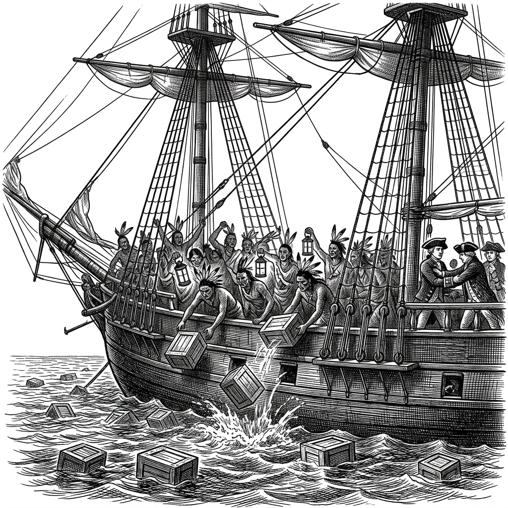
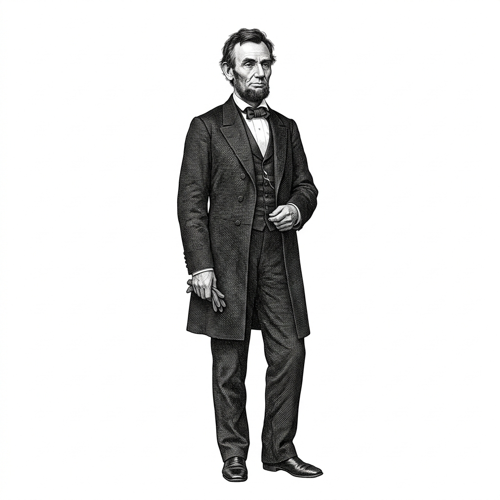
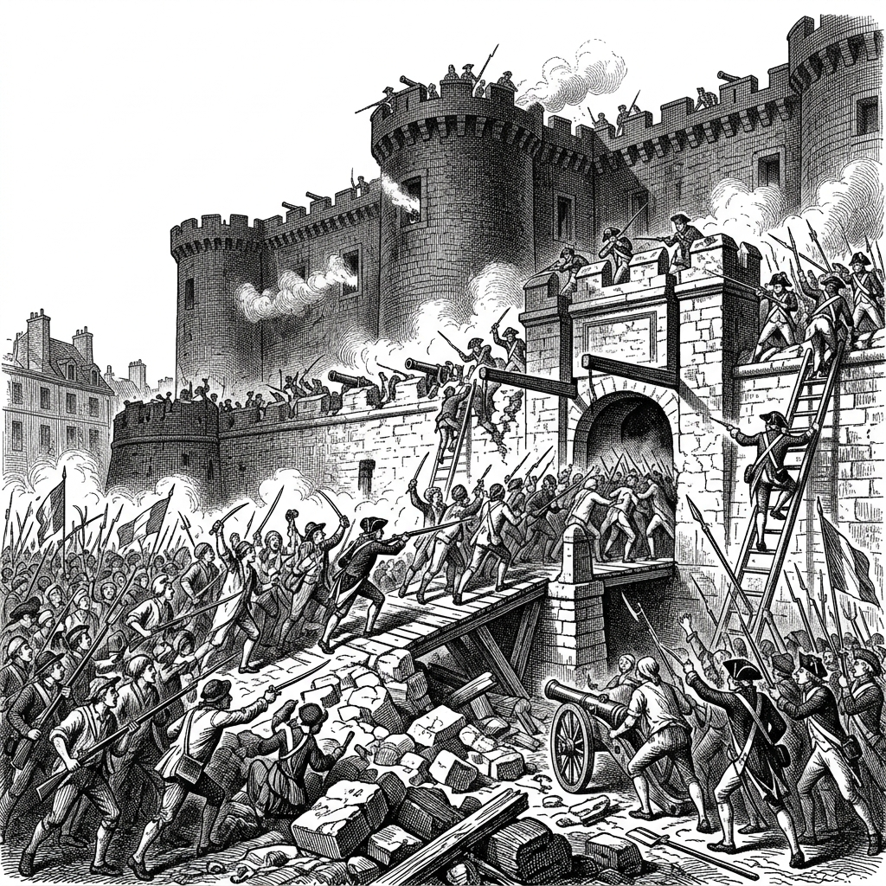

Vardaan Learning Institute
Class 8 History • Chapter Notes
🌐 vardaanlearning.com
📞 9508841336
Early Nationalist Movements
1. The Age of Revolutions
A revolution is a drastic, rapid change that significantly affects society, economy, politics, and culture. The 18th and 19th centuries witnessed significant changes, and this period is often termed the Age of Revolutions.
Concept
Nation State: When people living in the same territory begin to see themselves as one—sharing a common language, culture, history, ethnicity, or religion—they develop the consciousness of belonging to a Nation State. The 19th century saw the emergence of these nation states due to early nationalist movements.
2. The American Revolution (1775-1783)
Many migrants from Europe (referred to as the Pilgrim Fathers) had established 13 colonies along America's eastern coast due to exploration and religious persecution in Europe. These colonies were ruled by the British.

Causes of the Revolution
- Oppressive Taxation: The colonists were heavily taxed by the English Crown without having any representation in the British Parliament. This led to the famous slogan: "No taxation without representation."
- The Stamp Act (1765): Imposed taxes on all business transactions and legal documents in the colonies.
- Influence of Philosophers: Thinkers like Voltaire, Rousseau, John Locke, and Montesquieu inspired the American colonists to demand liberty and self-rule.
Key Events
- Boston Tea Party (1773): In protest against the Tea Act (which gave the British East India Company a monopoly over tea), colonists disguised as Native Americans dumped tea crates from a British ship into the sea. This act marked the beginning of open hostility.
- Declaration of Independence: On July 4, 1776, representatives of the 13 colonies met in Philadelphia and adopted the Declaration of Independence. Authored mainly by Thomas Jefferson, it stated that all men are born equal with the right to life, liberty, and the pursuit of happiness.
- Victory at Yorktown (1781): Led by George Washington, the American army defeated the British (led by Lord Cornwallis). The war officially ended with the Treaty of Paris (1783).
Fact
Impact of the American Revolution: It led to the birth of the United States of America. It established the first constitutional republic, and George Washington became its first President in 1789. The Bill of Rights (1791) was later added to ensure personal freedoms.
3. The American Civil War (1861-1865)
The Civil War was fought between the Northern and Southern states of America primarily over the issues of slavery, state rights, and national unity.

Causes and Division
- Economic Differences: The North was heavily industrialised, while the South was largely rural and agricultural, depending entirely on large cotton and sugar plantations.
- Issue of Slavery: The South relied on the forced labour of African slaves. The North strongly opposed slavery, influenced by liberal ideals and books like Harriet Beecher Stowe's Uncle Tom's Cabin.
- Secession: When Abraham Lincoln, an anti-slavery Republican, was elected President in 1860, 11 Southern states broke away (seceded) and formed the Confederate States of America under President Jefferson Davis.
The Conflict and Impact
- The War: The war broke out in April 1861. The bloodiest clash was the Battle of Gettysburg (1863). It marked a turning point in modern warfare, using rifles, early machine guns, telegraphs, and steam-powered ships.
- Gettysburg Address: President Lincoln delivered a historic speech redefining democracy as a government "of the people, by the people, for the people." He also issued the Emancipation Proclamation to formally abolish slavery in the South.
- Conclusion: In 1865, Confederate General Robert E. Lee surrendered to Union General Ulysses S. Grant, ending the war.
- Effects: The nation's unity was preserved. The 13th Amendment officially abolished slavery. The post-war era focused on rebuilding the devastated South (Reconstruction Period).
4. The French Revolution (1789-1799)
The French Revolution was a massive uprising that overthrew the absolute monarchy and paved the way for modern democratic principles across Europe.

Causes of the Revolution
- Social Inequality: French society was divided into three strict 'Estates'. The First Estate (Clergy) and Second Estate (Nobility) enjoyed wealth and paid no taxes. The Third Estate (Commoners, peasants, and the Bourgeoisie) formed 95% of the population, paid heavy taxes, and had no political rights.
- Economic Hardship: The luxurious, wasteful spending of King Louis XVI and Queen Marie Antoinette, along with the cost of wars and repeated famines, emptied the royal treasury and drove up the price of bread.
- Influence of Philosophers: Thinkers like Voltaire and Rousseau spread radical new ideas of liberty, equality, and fraternity.
- Inspiration from America: French soldiers who helped in the American War of Independence returned with strong ideas of democracy.
The Course of the Revolution
- Storming of the Bastille (July 14, 1789): An angry crowd stormed the Bastille prison, a hated symbol of the King's absolute power. This marked the official start of the revolution.
- The revolutionaries eventually executed King Louis XVI and the Queen.
- France was declared a republic, guided by the famous ideals: Liberty, Equality, and Fraternity.
5. Rise and Fall of Napoleon Bonaparte
After a decade of political turmoil, a brilliant military commander named Napoleon Bonaparte rose to power. He crowned himself Emperor of France in 1804.
- He brought order to France by introducing the Napoleonic Code, which ended noble privileges and applied laws equally to all citizens.
- He expanded his empire across much of Europe, but faced growing resistance and nationalism from conquered territories.
- He was finally defeated at the Battle of Waterloo (1815) by the Duke of Wellington and was sent into exile.
Important
Impact of the French Revolution: It permanently ended the absolute monarchy in France. Its core principles (Liberty, Equality, Fraternity) spread across the globe. It sparked a wave of nationalism that directly led to the unification of nations like Italy and Germany, making the year 1848 known as the Year of Revolutions.